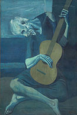

Pablo Picasso
(Málaga, Spain, 25 October 1881 - Mougins, France, 8 April 1973)

Picasso is probably the most important figure of 20th century, in term of art, and art movements that occurred over this period. To say that Pablo Picasso conquered western art is, by today, the merest usual place. Before the age of 50, the Spanish born artist had become the most well known name in modern art, with the most distinct style and eye for artistic creation. There had been no other artists, prior to Picasso, who had such an impact on the art world, or had a mass following of fans and critics alike, as he did.
Although his art career spanned over a 7 decade period, Pablo Picasso is most known for his introduction of cubism, and modern approach to painting, which set forth the movements to follow in to the twentieth century. Not only was his art form well ahead of his time, but the works he created went on to influence artists and painters down the line, for a period of more than 50 years, and still influences the styles of many artists today.
With his introduction of the cubism art form, alongside Georges Braque, Picasso introduced the world to a new way of looking at art. Although most people during his early career did not appreciate his work, Pablo Picasso created art that focused on new, colorful, and expressionist ways of looking at art forms. Rather than seeing art as a two-dimensional form, the new movement of cubism focused on how art could be seen in a number of ways, dimensions, and angles.

Les Demoiselles D'Avignos was his first piece, that in and of itself, introduced the cubism form to the world. It took five women, and the picture distorted their faces, bodies, and seemed that their heads were on backwards. Forcing the viewer to look at the painting at more than one angle, and direction, it was meant to showcase more than met the eye.
With this first piece Picasso was greatly criticized. But, today, it is one of the most iconic pieces he created. What he did for modern art was to create a new way of looking at art. Basically, he broke away from tradition, and what was believed to be art, and focused on creating work that challenged the mind, challenged your vision, and created different ways of looking at the same thing. Much of his work was painted in the form of cubes and squares, to mimic what they looked like in different dimensions.
Cubism becomes a form that was no longer intended to depict reality; it was meant to be viewed as an abstract, allowing the viewer of the art to see what they wanted to see. In this way, Pablo Picasso truly transcended the art world, the way in which art came to be, and future works created by other artists that followed him. He placed a focus on creating different viewing angles, and different ways of looking at the same piece, so that viewers could maintain their own perspective of the piece, rather than look at a picture, and know exactly what it was. With his work, every viewer could see something different, and could view what they perceived to be reality in his art work.